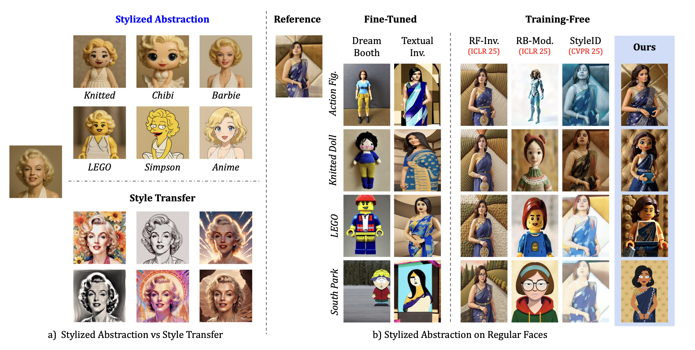
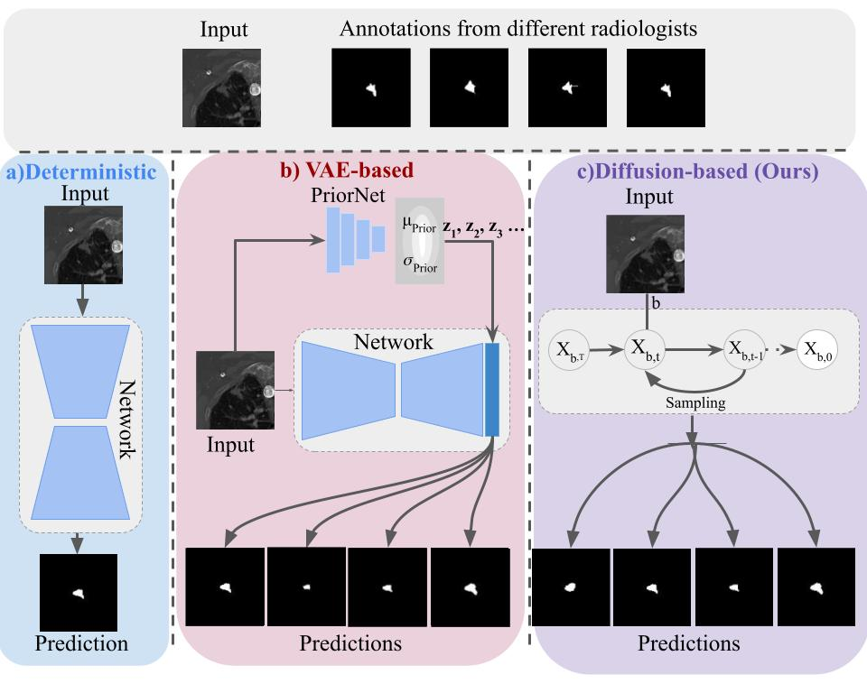
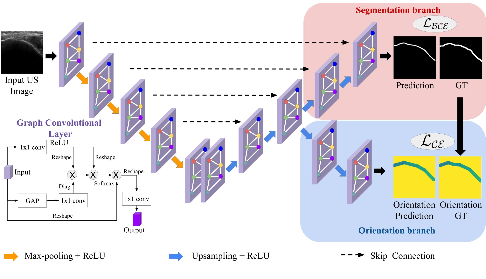
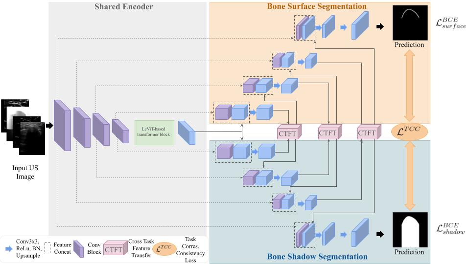

Graduated with a Ph.D. from Johns Hopkins University.
Multimodal LLMs · Computer Vision · Medical Imaging · Generative Models
Aimon Rahman আইমান রাহমান
I am an Applied Scientist at Amazon, where I work on scaling multimodal large language models. I completed my Ph.D. at the VIU Lab, Johns Hopkins University, advised by Dr. Vishal M. Patel. My research focuses on computer vision for medical applications and generative models, with particular interest in video generation.
Before my doctoral studies, I was a research assistant at North South University in Dhaka, working with Dr. M. Sohel Rahman and Dr. Mahdy Rahman Chowdhury, and at the Center for Applied Scientific Computing with Dr. Mamun Molla.
Focus
Research
My research interests lie in multimodal large language models and agentic systems. At Amazon, I currently work on scaling multimodal LLMs for production use cases, with a focus on building capable, reliable, and efficient systems.
I also have a keen interest in video generative models. In the long term, I hope to bring advances in multimodal intelligence and generative modeling into medical imaging, with the goal of making healthcare more accessible and affordable.
Updates
News
One paper accepted at ICASSP 2026.
One paper accepted at MIDL 2026.
Joined Amazon as an Applied Scientist.
Received a Postdoc-NeT-AI fellowship from DAAD, Germany.
One paper accepted at MIDL 2024.
Joined Amazon in Bellevue as an Applied Scientist Intern.
One paper accepted at CVPR 2023.
Received the MICCAI Student Travel Award; two papers accepted at MICCAI 2022.
Joined the VIU Lab at Johns Hopkins University as a Ph.D. student.
Selected work
Publications

Under Review
Training-Free Stylized Abstraction
Aimon Rahman*, Kartik Narayan*, Vishal M. Patel
A fully training-free framework that uses inference-time VLLM scaling, cross-domain rectified flow inversion, and style-aware scheduling to preserve identity across diverse abstraction styles.

CVPR 2023
Ambiguous Medical Image Segmentation using Diffusion Models
Aimon Rahman, Jeya Maria Jose Valanarasu, Ilker Hacihaliloglu, Vishal M. Patel
Generates multiple plausible medical segmentations using expert groups, improving both accuracy and output diversity.

MICCAI 2022
Orientation-Guided Graph Convolutional Network for Bone Surface Segmentation
Aimon Rahman, WGC Bandara, Jeya Maria Jose Valanarasu, Ilker Hacihaliloglu, Vishal M. Patel
An orientation-guided graph network that improves connectivity in ultrasound bone-surface segmentation.

MICCAI 2022
Simultaneous Bone and Shadow Segmentation Network Using Task Correspondence Consistency
Aimon Rahman, Jeya Maria Jose Valanarasu, Ilker Hacihaliloglu, Vishal M. Patel
A shared transformer encoder and cross-task feature transfer jointly segment bone surfaces and acoustic shadows.
Show more publications
Biomedical Physics & Engineering Express · 2021
3C-GAN: Class-consistent CycleGAN for malaria domain adaptation
Aimon Rahman, M. Sohel Rahman, M.R.C. Mahdy
CLEF · 2021
ViPTT-Net: Video pretraining for tuberculosis type classification
Hasib Zunair, Aimon Rahman, Nabeel Mohammed · 2nd place
Tissue and Cell · 2021
Automatic segmentation of blood cells from microscopic slides
Deponker Sarker Depto et al., Aimon Rahman, M. Sohel Rahman, M.R.C. Mahdy
Tissue and Cell · 2020
A Comparative Analysis of Deep Learning Architectures on a High-Variation Malaria Dataset
Aimon Rahman, Hasib Zunair, Tamanna Rahman Reme, M. Sohel Rahman, M.R.C. Mahdy
PRIME, MICCAI · 2020
Uniformizing Techniques to Process CT Scans with 3D CNNs for Tuberculosis Prediction
Hasib Zunair, Aimon Rahman, Nabeel Mohammed, Joseph Paul Cohen
arXiv · 2019
Improving Malaria Parasite Detection using Deep Convolutional Neural Networks
Aimon Rahman, Hasib Zunair et al.
Teaching
In the classroom
Instructor
Introduction to Deep Learning with Medical Imaging
Fall 2023